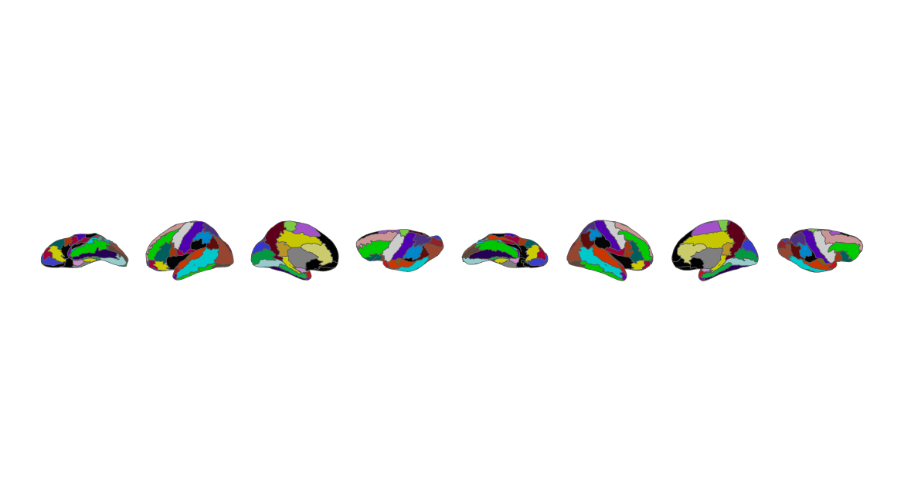
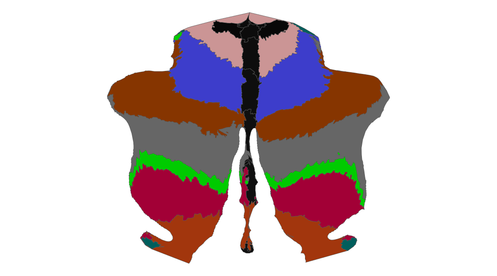
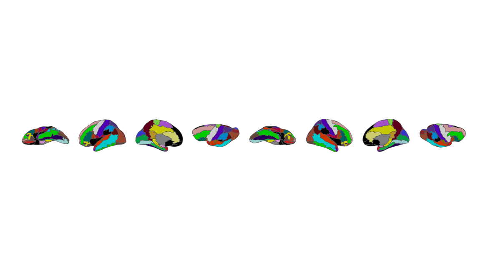
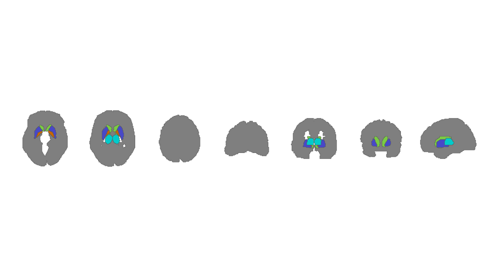
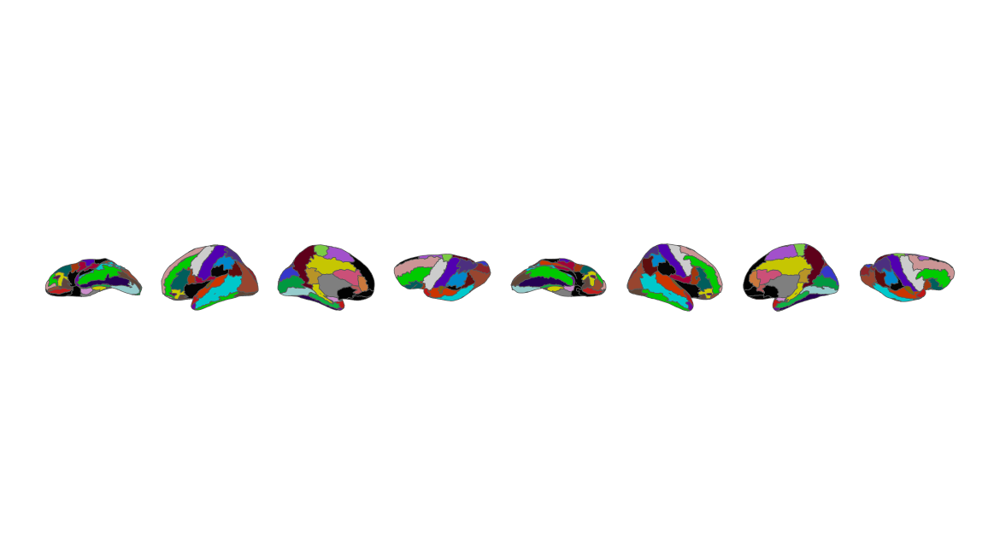
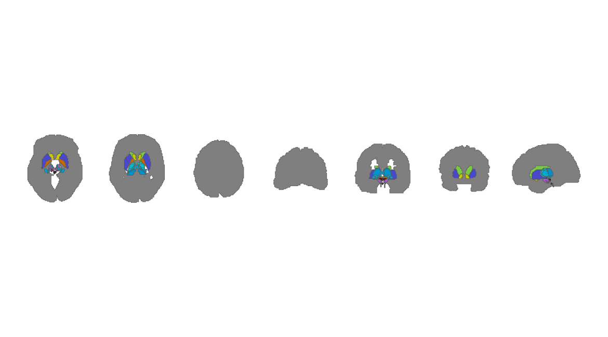

ggsegAAL
ggsegAAL provides cortical, subcortical, and cerebellar representations of the Automated Anatomical Labeling (AAL) atlas family for the ggsegverse ecosystem. This development version extends the coverage to nine atlas components spanning AAL1, AAL2, and AAL3, with 2D and 3D data.
Development release (3.0.0). This repository is a proposed update to the ggsegverse ggsegAal package, not an official ggsegverse release. The geometries and labels may differ from previous versions. Compatibility should be checked before replacing an existing analysis workflow.
Installation
Until this version is merged upstream, install it from this development repository:
# install.packages("remotes")
remotes::install_github("lemaitreh/ggsegAal")The development repository is lemaitreh/ggsegAal.
Available atlases
| Atlas | Cortical | Subcortical | Cerebellum | Anatomical regions |
|---|---|---|---|---|
| AAL1 | aal1_cortical() |
aal1_subcortical() |
aal1_cerebellum() |
82 + 8 + 26 = 116 |
| AAL2 | aal2_cortical() |
aal2_subcortical() |
aal2_cerebellum() |
86 + 8 + 26 = 120 |
| AAL3 | aal3_cortical() |
aal3_subcortical() |
aal3_cerebellum() |
90 + 50 + 26 = 166 |
The subcortical 2D representations may include a contextual Cortex label; it is not counted as an anatomical subcortical region.
Two-dimensional visualizations
The following calls plot each component. The cortical atlases use Colin27-based surface representations; cerebellar representations use SUIT-based geometry.
AAL1
library(ggsegAAL)
library(ggseg)
library(ggplot2)
# Apply the original lookup-table colors using the atlas labels.
# Keep the palette names unchanged (including lh_ and rh_ prefixes).
plot_atlas_lut <- function(atlas) {
pal <- ggseg.formats::atlas_palette(atlas)
ggplot() +
ggseg::geom_brain(
atlas = atlas,
mapping = aes(fill = label),
show.legend = FALSE
) +
scale_fill_manual(values = pal, guide = "none") +
theme_void() +
theme(legend.position = "none")
}
for (atlas in list(aal1_cortical(), aal1_subcortical(), aal1_cerebellum())) {
print(plot_atlas_lut(atlas))
}
Figure 1: AAL1: cortical, subcortical, and cerebellar components.
Figure 2: AAL1: cortical, subcortical, and cerebellar components.

Figure 3: AAL1: cortical, subcortical, and cerebellar components.
AAL2
for (atlas in list(aal2_cortical(), aal2_subcortical(), aal2_cerebellum())) {
print(plot_atlas_lut(atlas))
}
Figure 4: AAL2: cortical, subcortical, and cerebellar components.

Figure 5: AAL2: cortical, subcortical, and cerebellar components.

Figure 6: AAL2: cortical, subcortical, and cerebellar components.
AAL3
for (atlas in list(aal3_cortical(), aal3_subcortical(), aal3_cerebellum())) {
print(plot_atlas_lut(atlas))
}
Figure 7: AAL3: cortical, subcortical, and cerebellar components.

Figure 8: AAL3: cortical, subcortical, and cerebellar components.

Figure 9: AAL3: cortical, subcortical, and cerebellar components.
Three-dimensional visualizations
The ggseg3d_aal() helper uses Colin27 inflated meshes for cortical representations and can add a translucent Colin27 pial surface for anatomical context around subcortical or cerebellar representations.
library(ggsegAAL)
ggseg3d_aal(aal3_cortical())
ggseg3d_aal(
aal3_subcortical(),
context = TRUE,
opacity = 0.15
)
ggseg3d_aal(
aal3_cerebellum(),
context = TRUE,
opacity = 0.15
)Interactive 3D widgets are not embedded in this GitHub README; run the examples above in an interactive R session.
Compatibility with previous ggsegAAL releases
The original entry points remain available:
# Original cortical AAL atlas
ggplot() + ggseg::geom_brain(atlas = aal()) + theme_void()
# AAL2 cortical atlas
ggplot() + ggseg::geom_brain(atlas = aal2()) + theme_void()
# Existing AAL3 entry points
for (atlas in list(aal3_cortical(), aal3_subcortical(), aal3_cerebellum())) {
print(
ggplot() +
ggseg::geom_brain(atlas = atlas) +
theme_void() +
theme(legend.position = "none")
)
}Compatibility of function names does not guarantee identical vertex geometry, polygon geometry, color palettes, or region labels across major versions. Compare outputs before reusing previously derived region-level results.
Reproducible construction and quality control
The atlas preparation scripts are available under data-raw/. The distributed package loads previously validated atlas objects; users do not need FSL or FreeSurfer to run the public accessors.
The package includes structural tests for all nine atlas components and the expected anatomical region counts. To run checks in the package source directory:
References
- Tzourio-Mazoyer N, et al. (2002). Automated Anatomical Labeling of Activations in SPM Using a Macroscopic Anatomical Parcellation of the MNI MRI Single-Subject Brain. NeuroImage, 15, 273–289. PubMed.
- Rolls ET, Joliot M, Tzourio-Mazoyer N. (2015). Implementation of a new parcellation of the orbitofrontal cortex in the automated anatomical labeling atlas. NeuroImage, 122, 1–5. PubMed.
- Rolls ET, et al. (2020). Automated anatomical labelling atlas 3. NeuroImage, 206. PubMed.
Contributing
This is a development implementation intended for review and potential integration into ggsegverse/ggsegAal. Please open issues at lemaitreh/ggsegAal.